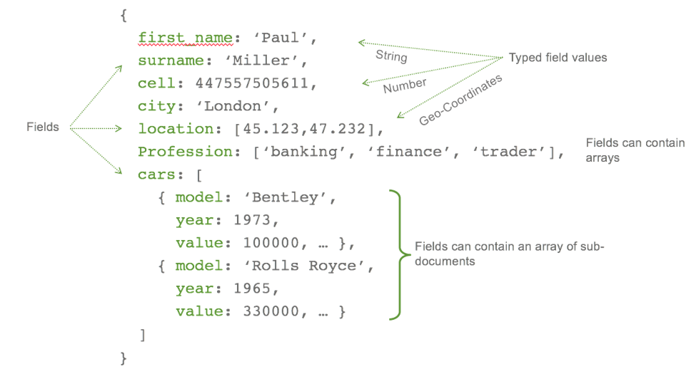
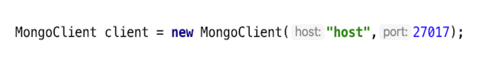

MongoDB е мултиплатформена база от данни с отворен код, написана на C++. MongoDB използва
документно-ориентиран модел за представяне на данните и е една от най-използваните нерелационни бази от
данни в наши дни. Това, че е нерелационна
база от данни означава, че не е необходимо да има предварително дефинирана схема на информацията, която ще
бъде съхранявана в базата от данни. При MongoDB всяка база от данни се състои от колекции, които от своя
страна съдържат документи.
Всеки документ е в Binary JSON (BSON) формат и може да се различава от останалите документи спрямо размера,
броя и типа на съхраняваните полета. Документно-ориентираният модел за представяне на данните предоставя
възможност за ad hoc заявки,
индексиране, бързо достъпване и анализиране на съхраняваната информация.
Сравнение на MongoDB с релационните бази от данни
Релационна база от данни
MongoDB
Необходимо е предварително да се помисли за дизайн на базата - какви таблици, колони и релации
ще бъдат нужни за представянето на информацията.
Не е необходимо да се знае цялостният дизайн на базата от самото начало - той може да се промени
на по-късен етап без това да има висока цена.
Базирана на таблици
Базирана на колеции и двойки, изградени от ключ и стойност
Поддържа индексиране
Поддържа индексиране
Поддържа Group By
Поддържа Aggregation
Поддържа Foreign Key
Не поддържа Foreign Key. Ако е необходимо такова ограничение, трябва да се реализира чрез код.
Поддържа Join
Не поддържа Join, но може да се промени структурата на документа, като към него се добави друг
документ
Съдържа схеми, които са предефинирани
Съдържа динамични схеми
Вертикално скалиране
Хоризонтално скалиране
По-бавна е от NoSQL базите данни
MongoDB е няколко десетки пъти по-бърз от традиционните релационни бази от данни
MongoDB намира най-голямо приложение в сферата на Big Data и Hadoop приложенията, които работят с големо
количество информация. Често се използва и за мобилни приложения или в областта на социалните медии, за
анализиране на информацията, която е в неструктуриран
формат. Друга област на приложение са центровете за информация. В тези сценарии е трудно данните да бъдат
структурирани в таблици. Дори да е възможно, това не би било разумно решение, тъй като свързването на
отделните таблици значително ще повлияе на значително на производителността.
При MongoDB информацията за един обект се съхранява в един единствен документ, а при релационния модел,
тя е разделена в няколко таблици. При документно-ориентирания модел, който използва MongoDB, данните сe
намират на едно място и това премахва
нуждата от изграждане на връзки между тях. Резултатът е висока скалируемост и производителност, тъй като
за да се вземе информацията за един обект е необходимо да се извърши само едно четене.
Документно-ориентираният модел прави MongoDB много по-подходящ за използване при реални проблеми и
изисквания.
Позволява документно-базирани заявки - възможно е търсене по поле, обхват, регулярен израз. Заявките
могат да бъдат изпращани с JavaScript функции, които се задават от потребителя и връщат като резултат
полета от документ.
Документно-ориентирано съхранение - използва BSON формат.
Поддържа индексиране – всяко поле в документа може да бъде индексирано.
Може да се стартира на няколко сървъра, като съхраняваната информация се дублира – това позволява
поддържането на системата при наличието на хардуерни проблеми. Използването на повече от един сървър,
също така се използва за балансиране на
информацията.
Репликация – MongoDB има съвместимост с репликационни сетове. Репликационният сет се състои от копия на
дадената информация. Едно копие може да бъде определено като главно или второстепенно. Главното копие
може да изпълнява както четене, така
и писане върху данните. Второстепенните копия са копия на информацията, която се намира в главното копие
и могат да извършват само четене на данните. Ако има проблем с главното копие, автоматично ще се избере
негов заместител от второстепенните
копия.
id - задължително поле за всеки един документ в MongoDB.
Представлява уникална стойност за документa, която може да бъде зададена от потребителя или автоматично.
Поле - наредена двойка от име и стойност. Един документ може да
съдържа нула или повече полета. Полетата са аналогични на колоните в нерелационните бази от данни.
Курсор - сочи към списъка с резултати от дадена заявка, с
неговата помощ те могат да бъдат итерирани с цел обработка.
Документ – един запис в колекция. Състои се от именовани полета.
Отделните документи в една колекция могат да съдържат различни помежду си типове полета. Документите са
подобни на JSON файлове, но се
съхраняват като BSON (Binary JSON) файлове.

Фигура 3. Пример за документ [3]
Колекция – съвкупност от документи (еквивалентна е на таблица в
релационните бази от данни). Принадлежи на конкретна база от данни.
Фигура 4. Пример за колекция [4]
База от данни – съвкупност от колекции. Един MongoDB сървър може
да съхранява множество бази от данни.
Осъщестяване на връзка с базата от данни – за да направим връзка с базата от данни е необходимо да знаем
името на базата от данни, с която искаме да се свържем. Ако името, което използваме не съществува,
базата от данни ще бъде създадена автоматично. Ако
искаме да се свържем с отдалечена база от данни, трябва да използваме адреса на сървъра и хоста.
Със създаването на MongoClient без параметри се прави връзка с инстанцията на MongoDB на локалния
хост на порт 27017.
Код 1. Създаване на MongoClient [1]Може експлицитно да специфицираме името на хоста като номерът на порта отново ще бъде 27017:Код 2. Създаване на MongoClient за конкретен хост [2]Напълно валиден е и третият вариант, при който оказваме както името на хоста, така и номера на
порта:

Код 3. Създаване на MongoClient за конкретен хост и порт
[3]
MongoDB може да се стартира в защитен режим, по този начин достъпът до база от данни може да се
осъществи чрез аутентикация. За целта, като параметър на MongoClient-а, трябва да бъде подаден
списък, който съдържа потребителско име, име на базата от данни и парола.
Достъпване на база от данни – след като сме създали MongoClient, може да достъпим определена база от
данни.
Код 4. Достъпване на база от данни [4]
Важно! MongoDatabase инстанциите не могат да бъдат променяни.
Достъпване на колекция
Код 5. Достъпване на колекция от конкретна база от данни
[5]
Ако колекцията, която се опитваме да достъпиме не съществува, тя ще бъде създадена автоматично,
когато за първи път се опитаме да запазим нещо в нея. Подобно на MongoDatabase инстанциите,
MongoCollection инстанциите също не могат да бъдат
модифицирани.
Създаване на колекция – може да създадем колекция, използвайки метода createCollection(). Като параметри
опционално могат да бъдат подадени размер на колекцията, правила за валидиране и т.н.
Изтриване на колекция
Код 6. Изтриване на колекция [6]
Добавяне на нов документ към колекция
Код 7. Добавяне на документ към определена колекция [7]
Както всяка една технология, така и MongoDB има предимства и недостатъци в зависимост от това, в каква
област се прилага.
Защо да използваме MongoDB при изграждането на уеб приложения?
С помощта на MongoDB може да се изгради цяло уеб приложение, използвайки един единствен скриптов език -
JavaScript.
MongoDB може да съхранява колекции от документи, като всеки един документ може да се различава от
останалите спрямо съдържанието си. Възможно е лесно да се правят промени относно типа или стойностите на
съхранявата информация в даден документ.
Една база от данни може да използва за повече от едно уеб приложение.
Най-често срещаният проблем при уеб приложенията е възможността за скалиране. За справянето със
скалируемостта MongoDB предоставя Sharding. Това осигурява добавянето на големи количества информация,
разпределени върху няколко машини. Всеки shard съдържа част от данните като отделна база данни.
Съвкупността от няколко shard-а се нарича Single Logical Database. Операциите се извършват през Query
рутери, App сървър и конфигурационни сървъри, които определят коя операция към кой shard трябва да се
насочи.
MongoDB е съвместимо с Cloud. Това го прави идеално решение ако нашето приложение трябва да имплементира
cloud функционалности.
МЕAN е съвкупност от технологии, която се асоциира с JavaScrip и създаването на уеб приложения. MEAN стекът
се използва за цялостна разработка на уеб приложения от клиен/сървър частта до базата от данни. Резултатът е
бързо и мощно уеб базирано
приложение. Приложенията, които се разбработват с помощта на MEAN стека, обикновено са cloud базирани.
Стекът включва собствен уеб сървър, а при необходимост базата от данни лесно може да се разшири.
MongoDB: играе ролята на хранилище за данните. Както в началото беше
споменато, MongoDB
е нерелационна база от данни, това позволява възможност за съхраняване на данните като JSON, който лесно
може да бъде сериализиран от вече използваните в приложението бизнес обекти.
По този начин не е необходимо обектите от базата да бъдат трансформирани в друга форма.
Express.js: Сървърна библиотека, която се използва за уеб пиложения. С
нейна помощ могат да бъдат разработени едностранни, многостранни и хибридни приложения. Позволява добавяне
на междинен слой, който да отговаря
на HTTP заявки. Express.js обработва всички взаимодействия между интерфейса и базата данни, като предоставя
безпроблемен пренос на данни към крайния потребител. Едни от най-големите плюсове на Express.js е, че
предоставя много бързи входно-изходни операции и асинхронност.
Angular.js: JavaScript библиотека, която се поддържа от Google. Най-често
се използва при браузърни приложения, за да представи MVC архитекрурата и да направи процесите по
разработването и тестването много по-бързи
и лесни. MEAN стекът включва Angular, за да подпомогне разработката на частта, с която потребителите
взаимодействат.
Node.js: JavaScript среда за изпълнение на сървърни и мрежови приложения с
отворен код. Използва се за приложения, които работят с голямо количество информация в реално време.
Най-голeмият плюс на Node.js е неговата мащабируемост. Разшириямостта на ресурсите, когато има нужда от тях
е важна характеристика на cloud базираните уеб приложения, а Node.js може да предостави ефективно милион
едновременни връзки, ако е необходимо.
Както става ясно от горното изображение, когато клиентът изпрати заявка, тя се получава от Angular.js, тъй
като той е отговорен за взаимодействието с клиента. След като клиентът направи заявката, Angular я изпраща
до Node.js, който от своя страна ще обработи тази заявка допълнително.След това идва ролята на Expressjs,
който прави APIs. Тези API-та извикват MongoDB,в зависимост от това къде искат да се преглеждат или
съхраняват данните. MongoDB извлича необходимите данни и връща отговора обратно на Express.js. Express.js ще
върне данните на Node.js, което от своя страна ще върне данните обратно на клиента чрез Angular.js. По този
начин Angular.js показва всички детайли, получени от MongoDB. Това представлява един цялостен цикъл на
работа на MEAN стека.
MEAN стекът е базиран на JavaScript, което означава, че за да можем да го използваме е необходимо да
пишем кода си главно на един език.
Всички технологии в MEAN стека са безплатни и с отворен код, това прави процеса по разработката много
по-лесен и бърз.
Може лесно да се превключва между кода на сървърната и клиентската част – няма нужда от допълнителни
инструменти за страната на сървъра като Apache или LAMP стек, тъй като Node.js се използва като уеб
сървър. Разработването на приложения с помощта на MEAN стека е лесно и бързо, защото разработчиците
могат да използват един език - JavaScript, както за клиентската, така и за сървърната част. Един
JavaScript програмист ще може да се справи с целия проект, иползвайки MEAN стека.
Предоставя голяма гъвкавост - MEAN стека позволява да тестваме лесно приложението си на cloud платформа,
след успещното му разработване. Приложенията могат лесно да бъдат разработвани, тествани и въведени в
cloud. Той също така ни позволява да добавим допълнителна информация по всяко време, чрез просто
добавяне на ново поле. MongoDB е разработен с идеята да се използва с cloud и предоставя пълна поддръжка
на клъстери и автоматична репликация.
Висока производителност и преизползваемост - Node.js предоставя висока производителност благодарение на
неблокиращата си архитектура. Angular.js от своя страна предоставя лесна поддръжка, по-добра тестваемост
и преизползваемост.
Недостатъци
Трудно е да се върнем към друг подход след като се разработили приложението, използвайки MEAN стека.
Заключение
MEAN стекът позволява бърза и ефективна разработка на уеб приложения. Лесно се учи и може да се комбинира с
други технологии. Всяка една технология от стека е достъпна и лесно може да се интегрира с останалите, в
зависимост от изискванията.